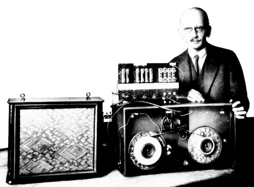
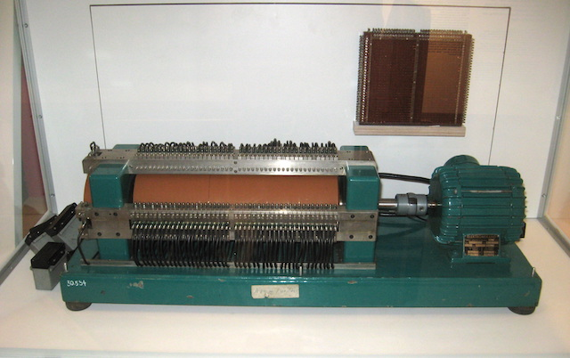
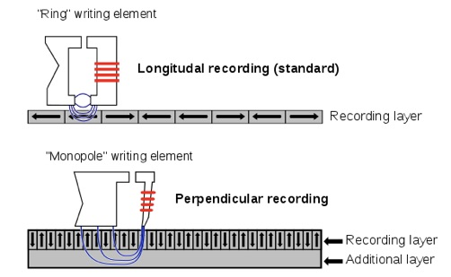
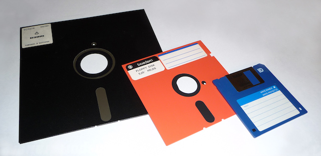
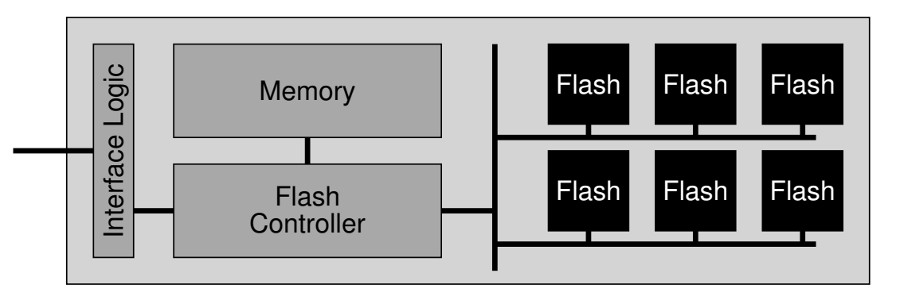

背景
操作系统是什么？
- 一组对象
- UNIX: everything is a file
- 数据
/bin/sh,a.txt, ... - 设备
/dev/tty,/dev/sda, ...
- 数据
- UNIX: everything is a file
- 一组 API
- open, read, write, fork, execve, exit, mmap, ...
最后没有解释的部分 (持久化)
- 文件是如何实现的？
- 为什么关机以后文件还在？
本次课内容与目标
理解 1-bit 在物理世界中是如何存储的，以及它们背后的存储设备
- 磁：磁带、磁盘、软盘
- 光：光盘、CD-RW
- 电：NAND Flash
持久化 (Persistence)
开始持久化之旅
Persistence: “A firm or obstinate continuance in a course of action in spite of difficulty or opposition.”
为什么要在这门课讨论持久化？
- “最小” 操作系统里的对象
- 进程 (状态机)
- (持久保存) 的数据 (文件)
- making information persist, despite computer crashes, disk failures, or power outages is a tough and interesting challenge
- 文件系统接管了 UNIX 世界的 “对象管理”
持久化：有关 “操作系统对象” 的故事
持久化的第一课：存储介质
持久化：需要 “non-volatility”
- 能把 1-bit 稳定持久地存储在物理世界
- 再次见证人类的历史！
存储设备
- 逻辑上可以看成是一个 bit/byte array
- 1 TB 的磁盘 = 1 T 个 1-byte ($8 * 10^{12}$ 个 1-bit)
- 通常支持按块 (block) 的方式读写
- 区别于 RAM (Random Access Memory)
- 评价方法：价格、扩展性 (容量)、速度、可靠性
存储介质：磁
磁带 (Magnetic Tape, 1928)

用 “磁化方向” 表示 1-Bit 信息
- 物理空间一定区域的磁介质
- N/S 极的朝向作为 1-bit
例子：磁带
- 纸带上均匀粘上 $\textrm{Fe}_2\textrm{O}_3$
- 支持顺序写入/读取
- 写入 (电流的磁效应)
- 使用电磁铁磁化
- 读取 (电磁感应)
- 使用传感器测量感应电流方向
磁带：作为存储设备的分析
分析
- 价格
非常低
- 扩展性 (容量)
非常高
- 读写速度
- 顺序读取：
勉强 - 随机读取：
几乎完全不行
- 顺序读取：
- 可靠性
存在机械部件 、需要保存的环境苛刻
今天的应用场景
- 冷数据的专用备份
磁鼓 (Magnetic Drum, 1932)
“并行版” 磁带
- 如果把磁带看成 “一维” 存储
- 磁鼓就是磁带的集合
- 更快的速度
- 更好的随机 read/write 性能

磁盘 (Hard Disk, 1956)
“二维并行版” 磁带
- 我们可以用整个二维平面来存储 bits
- 在二维平面上寻址需要两个维度的控制
依靠 3D 技术，有望突破 100 TB 存储

磁盘 (cont'd)

盘片 + 柱面 + 磁道 + 扇区 = 定位到 512 字节
- 为了读/写一个扇区
- 读写头需要到对应的磁道
- 转轴将盘片旋转到读写头的位置
磁盘：作为存储设备的分析
分析
- 价格
很低
- 扩展性 (容量)
很高 (二维平面上铺满的磁带 + 多个盘片)
- 读写速度
- 顺序读取：
较高 - 随机读取：
勉强
- 顺序读取：
- 可靠性
存在机械部件、磁头划伤盘片导致数据损坏
今天的应用场景
- 计算机系统的主力数据存储 (
海量数据：便宜才是王道)
磁盘：性能调优
为了读/写一个扇区
- 读写头需要到对应的磁道
- 7200rpm → 120rps → “寻道” 时间 8.3ms
- 转轴将盘片旋转到读写头的位置
- 读写头移动时间通常也需要几个 ms
通过缓存/调度等缓解
- 例如著名的 “电梯” 调度算法
- 现代 HDD 都有很好的 firmware 管理磁盘 I/O 调度
/sys/block/[dev]/queuenoop deadline [cfq]
软盘 (Floppy Disk, 1971)
降低交换数据的成本：把磁盘 (硬盘) 的读写头和盘片分开
- 分成电脑上的读写头 (drive) 和磁盘 (disk)
- 8" (1971), 5.25" (1975), 3.5" (1981)
- 最初的软盘成本很低，就是个纸壳子
- 3.5 英寸软盘为了提高可靠性，已经是 “硬” 的了
- 小时候的记忆
- 8" (1971), 5.25" (1975), 3.5" (1981)

软盘：作为存储设备的分析
分析
- 价格
低
- 扩展性 (容量)
低 (暴露的存储介质)
- 读写速度
- 顺序/随机读取：
低
- 顺序/随机读取：
- 可靠性
低 (暴露的存储介质)
今天的应用场景
- 躺在博物馆供人参观
存储介质：坑 (光)
Compact Disk (CD, 1980)
除了磁介质以外，还有别的办法可以存储 1-bit 吗？
- 在完美反射光线的表面上挖出 (几乎) 不反射光线的
坑 ！- 激光扫过表面，就能读出坑的信息来
- 由飞利浦 (激光碟片) 和索尼 (数字音频) 发明
- 激光扫过表面，就能读出坑的信息来

CD-RW
能否克服只读的限制？
- 方法 1
- 用激光器烧出一个坑来 (“刻盘”)
- 使用持久化数据结构 (append-only)
- 方法 2：改变材料的反光特性
- PCM (Phase-change Material)
- How do rewriteable CDs work?
挖坑的技术进展

CD (740 MB)
- 780nm 红外激光
DVD (4.7 GB)
- 635nm 红色激光
Blue Ray (100 GB)
- 405nm 蓝紫色激光
光盘：作为存储设备的分析
分析
- 价格
很低 (而且很容易通过 “压盘” 复制)
- 扩展性 (容量)
高
- 读写速度
顺序读取速度高；随机读取勉强 写入速度近乎为零 (挖坑容易填坑难)
- 可靠性
高
今天的应用场景
- 数字媒体的分发 (即将被互联网 “按需分发” 淘汰)
“挖坑”：不止是数据存储

Finally, 电
Solid State Drive (1991)
之前的持久存储介质都有致命的缺陷
- 磁：机械部件导致 ms 级延迟
- 坑 (光): 一旦挖坑，填坑很困难 (CD是只读的)
最后还得靠
Flash Memory “闪存”
- floating gate 的充电/放电实现 1-bit 信息的存储

Flash Memory: 几乎全是优点
分析
- 价格
低 (大规模集成电路，便宜)
- 扩展性 (容量)
高 (3D 空间里每个 $(x, y, z)$ 都是一个 bit)
- 读写速度
高 (直接通过电路读写)- 不讲道理的 IMBA 特性：容量越大，速度越快 (电路级并行)
- 快到需要淘汰了旧的 SATA 接口标准 (NVMe)
- 可靠性
高 (没有机械部件，随便摔)
但有一个意想不到的
USB Flash Disk (1999)

优盘容量大、速度快、相当便宜
- 很快就取代了软盘，成为了人手 $n$ 个的存储介质
- Compact Flash (CF, 1994)
- USB Flash Disk (1999, “朗科”)
放电 (erase) 做不到 100% 放干净
- 放电
数千/数万次 以后，就好像是 “充电” 状态了 - dead cell; “wear out”
- 必须解决这个问题 SSD 才能实用
NAND Wear-Out 的解决：软件定义磁盘
每一个 SSD 里都藏了一个完整的计算机系统

- FTL: flash translation layer
- “wear leveling”: 软件管理那些可能出问题的 blocks
Wear Leveling
维护一个 block lookup table (BLT)
- 然后 copy-on-write!
- 垃圾回收、block 重分配……

优盘和 SSD 的区别
优盘, SD 卡, SSD 都是 NAND Flash
- 但软件/硬件系统的复杂程度不同，效率/寿命也不同
- 典型的 SSD
- CPU, on-chip RAM, 缓存, store buffer, 操作系统 ...
- 寿命: ~1 PiB 数据写入 (~1,000 年寿命)

- SD 卡
- SDHC 标准未规定
- 黑心商家一定会偷工减料 (毕竟接口完全一样)
- 但良心厂家依然有 ARM 芯片
- SDHC 标准未规定
- 典型的 SSD
- × 宝 9.9 包邮的优盘，芯片一毛钱都能省……
FTL: 性能、可靠性、安全性的难题

大家可记得修电脑引发的血案？
- 首先，(快速) 格式化是没用的
- (M5 会告诉你这一点)
- 在你理解了 FTL 之后
- 即便格式化后写入数据 (不写满)
- 同一个 LBA 被覆盖，PBA 依然存储了数据 (copy-on-write)
- 即便格式化后写入数据 (不写满)
另一个 memory system 相关的安全问题
- Row Hammer
- O. Mutlu and J. Kim. RowHammer: A retrospective. IEEE Trans. on Computer-Aided Design of Integrated Circuits and Systems (TCAD), 2019.
SSD 的可靠性：另一个故事
什么？硬件里的软件？
- 其实非常复杂：算法, cache; store buffer; ...
谁写出来的？那可得有 bug 啊！
- 让我们好好构造疯狂的 workloads，把它弄挂吧！
- M. Zheng, et al. Understanding the robustness of SSDs under power fault. In Proc. of FAST, 2013.

有趣的故事：结果

这篇 paper 促进了硬件厂商对 FTL 的大幅改进
- 在 2015 年之后出产的产品，已经几乎无法找到这样的问题了 (cool!)
| Device | Model | Year | Bug? |
|---|---|---|---|
| SSD#1, 10, 8, 9, 6, 2 | A | 2011 x 3, 2012 x 2, 2010 | Y |
| SSD#2 | B | 2010 | Y |
| SSD#3, 11, 12 | C | 2011 | Y |
| SSD#4, 13 | D | 2011 | - |
| SSD#5, 14, 7, 15 | E | 2009, 2011 x 2, 2012 | Y |
总结
总结
本次课内容与目标
- 理解 1-bit 在物理世界中是如何存储的
- 磁、光、电和它们对应的存储设备
Takeaway messages
- 存储技术一直在发展
- 多核心处理器、GPU、TPU, ... 全部都对内存带宽有巨大的需求
- NVM 容量超过 DRAM, 性能开始接近 DRAM, 会发生什么？
- 例子: Intel/Micron 3D XPoint (PCM)
- 计算机系统基础/操作系统书的教科书必将被改写